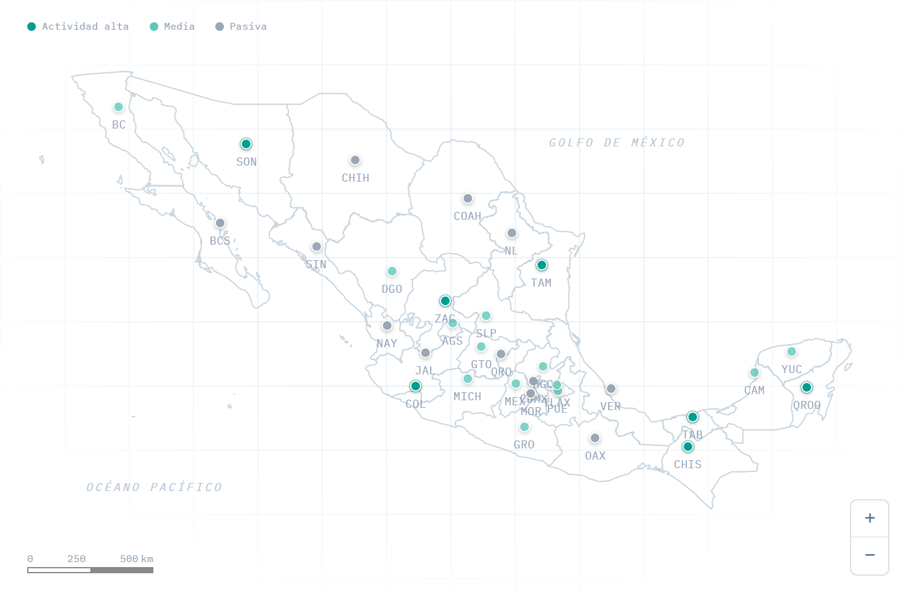
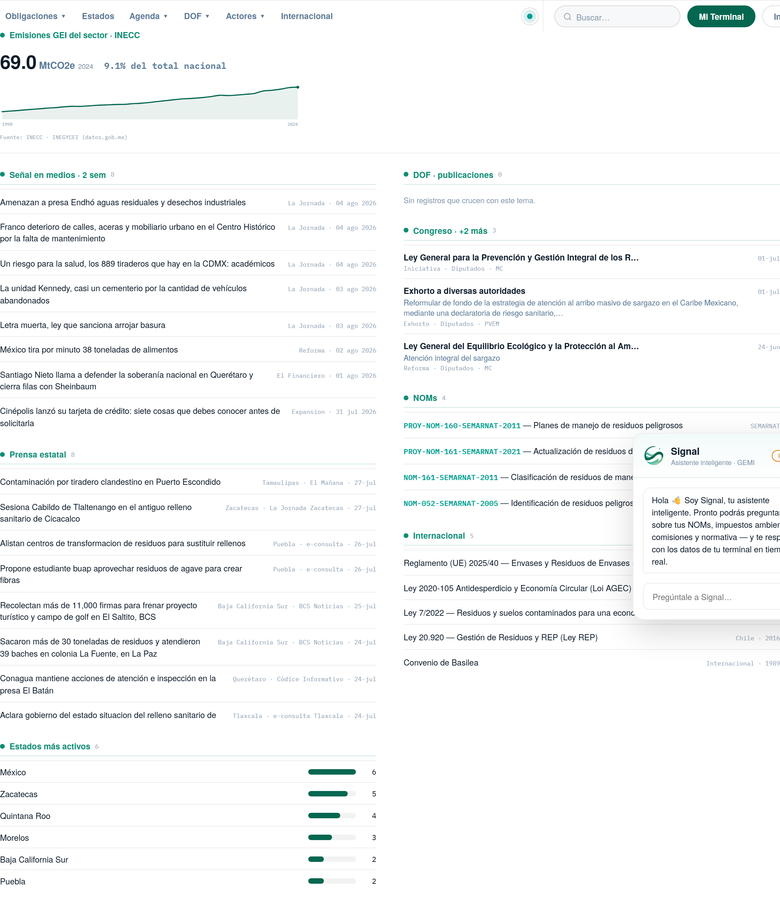
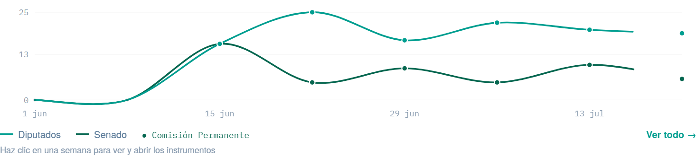
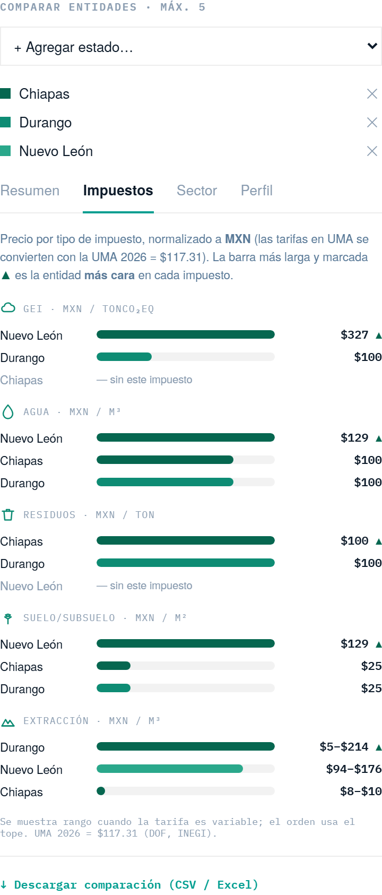
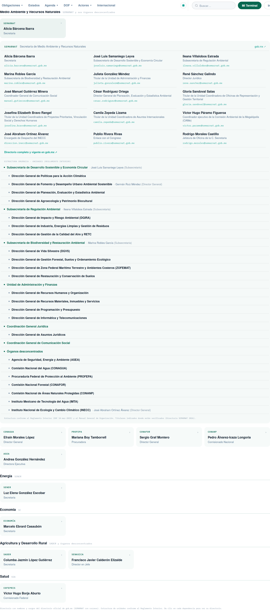
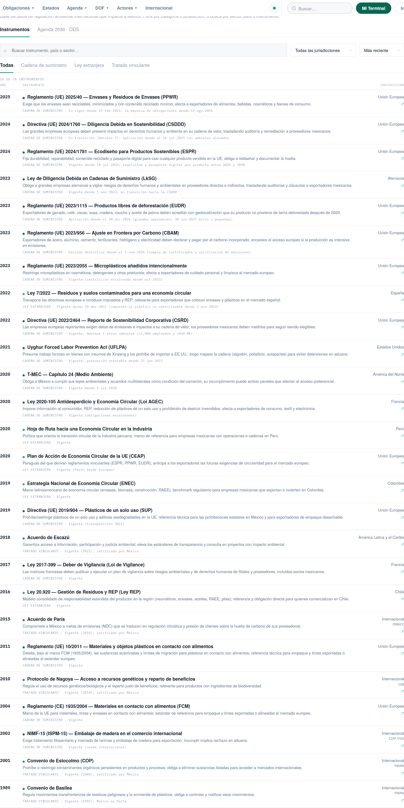
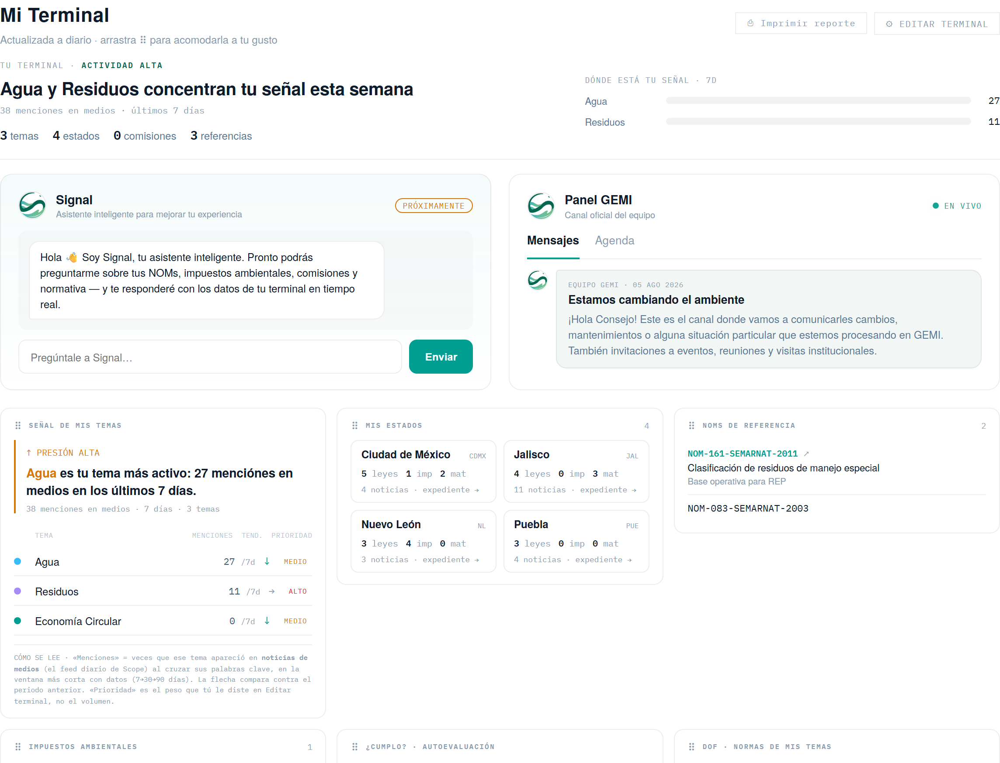
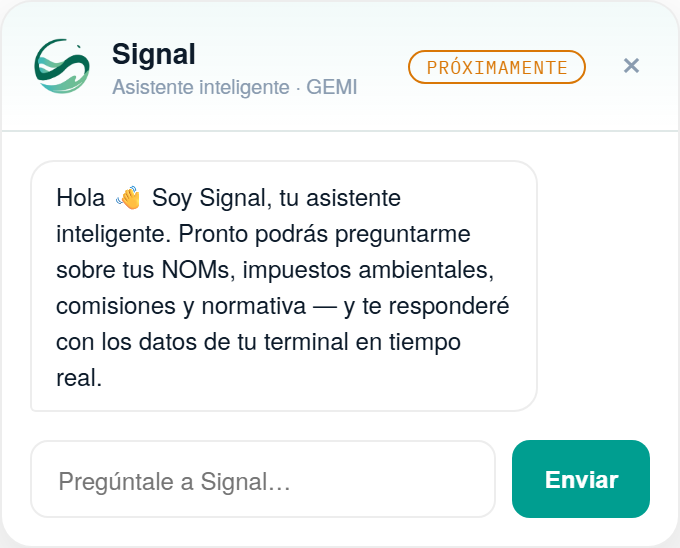

Vive en 32 congresos estatales, en el Diario Oficial de cada mañana, en cientos de Normas Oficiales Mexicanas, en los tribunales, en la conferencia matutina y en la prensa. Cambia todos los días. Ninguna empresa alcanza a leerla completa.
La reunimos toda. La volvimos legible. La pusimos viva.
Un mapa nacional que se ilumina según la actividad regulatoria y la presencia en medios de cada estado. Un clic y entras a su expediente completo.

Residuos, agua, economía circular, cambio climático, energía. El Radar cruza prensa, DOF, Congreso, NOMs y regulación internacional por tema, y te dice dónde sube la presión — con los datos duros del sector detrás.

Iniciativas, puntos de acuerdo y exhortos que tocan lo ambiental — con la ley que se reforma, quién la propone y su foto, y el cruce con las NOMs que monitoreas. La actividad legislativa federal, semana a semana.

Los impuestos ambientales viven en unidades distintas — unos en UMA, otros en pesos. Scope los normaliza a pesos y los compara por tipo (GEI, agua, residuos…), marcando la entidad más cara. Una decisión de operación, resuelta en segundos.

El gabinete ambiental federal, organizado por Secretaría, con su directorio real: nombre, cargo y correo de cada funcionario, del directorio oficial de gob.mx. De SEMARNAT a la comisión que discute tu norma.

Reglamentos de la Unión Europea, leyes de otros países y tratados que impactan a México — con su relevancia para el exportador nacional. Y la Agenda 2030 con los objetivos de mayor incidencia ambiental.

Cada usuario arma su propia terminal: elige temas, estados, comisiones y NOMs; Scope calcula su señal del día, su autoevaluación de cumplimiento, el canal del equipo y su reporte técnico — que se lleva en PDF con la foto del día.

Signal es el asistente inteligente de Scope. Disponible desde cualquier pantalla, pensado para responder sobre tus NOMs, impuestos, comisiones y normativa con los datos de tu terminal — la capa conversacional que hace de toda esta información una respuesta.

Las propuestas en consulta ante CONAMER, las reglamentaciones pendientes y las iniciativas del Congreso — cuando todavía se pueden influir, no cuando ya son obligación.
Detrás corre maquinaria todos los días: lectores automáticos de prensa nacional y estatal, del DOF, del Congreso, de CONAMER y de la conferencia matutina; e ingesta de datos abiertos oficiales — SEMARNAT, INECC — más bases legales curadas por GEMI. Todo con fuente. Todo fechado.
Direcciones de sostenibilidad, asuntos regulatorios y jurídicos: lo que antes eran semanas de despacho, aquí es una pantalla.
La jurisprudencia, el monitoreo internacional y el conocimiento de sus asociados. Scope es donde ese trabajo — que antes vivía en reportes — se vuelve producto vivo.
Y esta vez, se puede ver.